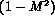

Critical flow (sometimes called "choked flow") is important for many industrial applications involving multiphase flow. These applications include the design of throttling valves for refrigeration systems, bypass systems for steam power plants, emergency relief in chemical and nuclear plants and other diverse applications. Most of the research and development in the recent past has been in regard to plant safety analyses. Our discussion of critical flow is based on experimental and model results with this latter subject as the main application, although the models are completely general and applicable to other design issues.
One of the observations made in examining multiphase pressure drop was that one could determine if the multiphase flow could be considered compressible or incompressible by examining the acceleration terms in the pressure gradient expression. For instance, in the HEM model for the pressure gradient it was noted that the equation denominator could be considered as  where M is a local two-phase flow Mach number; i.e., ratio of mass velocity to a two-phase "acoustic" mass velocity. Analogous to single phase flow, as the Mach number approaches unity the flow must be considered compressible and the overall pressure gradient increases; asymptotically approaching an infinite gradient (shock wave) as the Mach number equals one. Thus, as in single phase flow, there is a relationship in this multiphase flow model between the maximum mass flux through a duct and the local sound speed. This maximum mass flux is identified as the critical flow (or choked flow") of the system, and is the major topic of this section.
These notes will begin with a discussion of single phase sound speed and critical flow ("choking"). This logically leads us to consider the homogeneous equilibrium model for sound speed and for the multiphase critical flow. Finally, more sophisticated models considering nonequilibrium effects and the effects of phase velocity differences are discussed. We end the paper with a discussion of these models assumptions and recommendations for usage. In this development, as in the discussion of pressure drop, we assume the flow is approximately one-dimensional. This simplifying assumption allows us to develop analytical expressions and is approximately valid in realistic situations if the change in flow area is not abrupt. Many practical applications can involve at least two-dimensional flow. At worst the one-dimensional assumption affords one a way to estimate behavior in more complex multi-dimensional systems to bound the expected behavior.